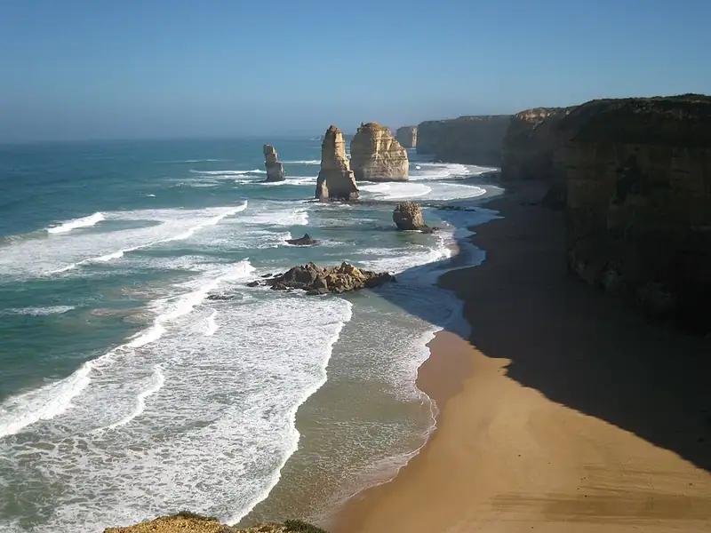

Broken Head, Port Campbell
Broken Head is a beach in Port Campbell, in the Corangamite Shire Council area, good for all ages. Loch Ard Gorge/Great Ocean Rd (coach) is a 17-minute walk away and the nearest public toilet is about 3020 m away.


Quick facts
- Toilets
- 3020 m away
- Public transport
- Loch Ard Gorge/Great Ocean Rd, coach (routes Warrnambool - Melbourne via Apollo Bay & Geelong), 17 min walk
This page has basic info from the map: name, location and type. We have not checked the details yet. Know this place? Tell us.
Questions parents ask
- Where is Broken Head?
- Broken Head is in Port Campbell, Victoria.
- Is Broken Head free?
- Yes. It is a public beach, free to visit.
- Are there toilets at Broken Head?
- The nearest public toilet is about 3020 m away.
- How do I get to Broken Head by public transport?
- The closest stop is Loch Ard Gorge/Great Ocean Rd (routes Warrnambool - Melbourne via Apollo Bay & Geelong), a 17-minute walk.
Nearby places
- Sherbrooke Estuary
Beach · Port CampbellFree
- Rutledge Creek Beach
Beach · Port CampbellFree
- The Arches Marine Sanctuary
Park · Port CampbellFree
- Port Campbell Parks Victoria Depot
Park · Port CampbellFree
- Port Campbell Skate Park
Skate, BMX or pump track · Port CampbellToilet nearbyFreeBus 5 min walk
- Playground on Hennessy Street
Playground · Port CampbellToilet nearbyFreeBus 5 min walk
- Frying Nemo Fish & Chips
Cafe or restaurant · Port CampbellToilet nearbyBus 4 min walk
- REAL Pizza Pasta Salads
Cafe or restaurant · Port CampbellToilet nearbyBus 3 min walk